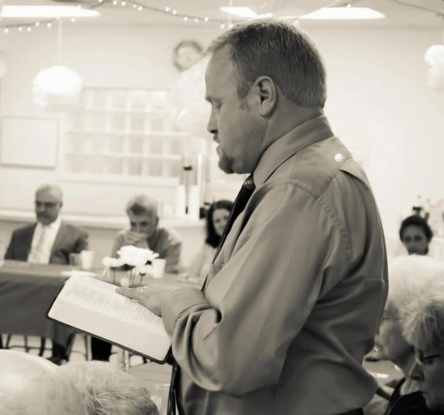

Worship
Sunday · 9:30 AM – 10:30 AM
Thank you for taking the time to learn more about Corunna Bible Chapel! Whether you’re searching for a church to call home or looking for answers to some of life’s biggest questions, we’re so glad you're here! We hope you will join us to learn of Jesus' love!
The information on this page is here to help you learn more about CBC's schedule, what to expect, and some events that happen throughout the year. If you have any questions, please contact us.
Sunday · 9:30 AM – 10:30 AM
Sunday · 11:00 AM – 12:00 PM
Sunday · 12:15 PM – 1:00 PM
Tuesday · 7:00 PM – 8:30 PM
"Let us hold fast the confession of our hope without wavering, for he who promised is faithful. And let us consider how to stir up one another to love and good works, not neglecting to meet together, as is the habit of some, but encouraging one another, and all the more as you see the Day drawing near."
Hebrews 10:23-25
We are located at 6787 Wilkinson Rd, Corunna, MI 48817
Each Sunday, we begin with Worship starting at 9:30 am and concluding at approximately 10:30 am. This is a time for remembrance, worship, and praise.
We have a time of light refreshments and fellowship from 10:30 am to 11:00 am. If you are visiting, this time is perfect for getting familiar with us!
Our Family Hour (Sunday School) is from 11:00 am to 12:00 pm. This is a time for people of all ages to learn about Jesus Christ and His work for all mankind, to grow in one's personal faith, and to be spiritually fed from the Bible, the Word of God. We begin with a worship songtime of contemporary and traditional hymns. The songtime is followed by preaching from the Bible for adults. We offer children & young people classes for ages 3 to 17.
We conclude the Lord's day with a time around the Word. Ministry is a time to be challenged and encouraged from 12:15 pm to 1:00 pm. We start with a time of singing traditional hymns and then a time of preaching.
The third Sunday of each month, we have a Fellowship Sunday. This is a time of Christian fellowship around a meal following the Ministry.
Tuesday night (7:00 pm to 8:30 pm), we have a time of Prayer and Bible Study. Our Bible Studies focus on specific books of the Bible. We walk through the book verse by verse to see what the Lord has for us.
The first Friday night of each month (October to May, 6:30 pm to 8:30 pm), we offer a children's ministry called Good News Club. GNC is a time of fun, games, and most importantly, a time in God's Word for children ages 4-12.
In June, 16th - 20th, we offer a Vacation Bible School for ages 4-12. This is a time of singing, puppets, skits, Bible lessons, crafts, activities, and more!
Each year, we host a Bible Conference. Topics are selected to challenge, to edify, and to help those who attend grow in their faith. The conference is a great opportunity to fellowship with Christians from across the United States and Canada and to study the Word of God.
